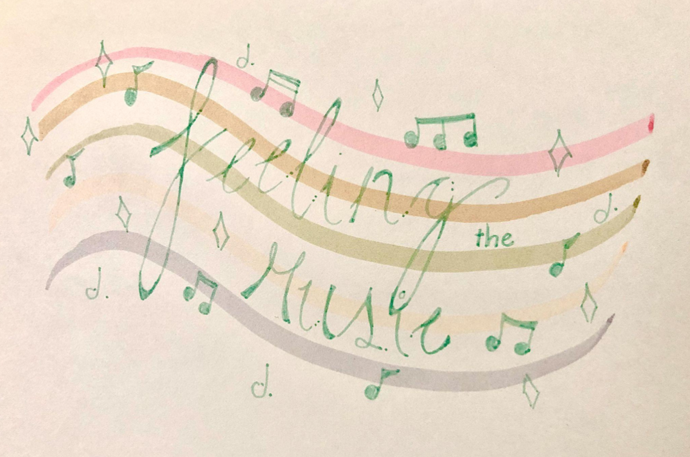

<!DOCTYPE html>
<html lang="en">
<head>
    <meta charset="UTF-8">
    <meta http-equiv="X-UA-Compatible" content="IE=edge">
    <meta name="viewport" content="width=device-width, initial-scale=1.0">
    <title>About</title>
    <link rel="stylesheet" href="style.css">
</head>
</html> 

<body>
    <div id="wrapper">
        <header>
            <div class="title">
                <h1>Solomon Vidal</h1>
                
            </div>

            <nav>
                <div class="links">
                    <a href="index.html">Home</a>
                    <a href="interviews.html">Interviews</a>
                    <a href="reflection.html">Reflection</a>
                </div>
             </nav>
        </header>
    
        <main>
            <h1>
                About "Feeling The Music":
            </h1>
        
            <div class="flexbox">
                <div class="music">
                    
                </div>
                <div class="feel-the-music-text">
                    <h3>About this Project:</h3>
                    <p>This project is an interview-based look into how people listen to music. In this, you will read interviews about how music affects three different interviewees: Erning Escanilla, Cecilia Vidal, and Kri(Zelda) Howell.</p>
                </div>
            </div>

        </main>

    </div>

    <footer>
        <h2>&copy; Vidal 2023</h2>
    </footer>

    <a href="#top" class="back-to-top">&uarr;</a>
          
</body>
